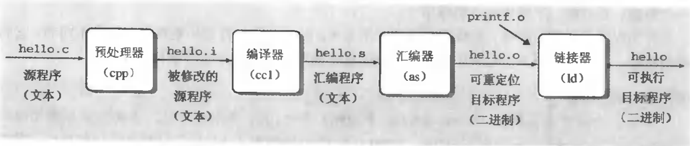
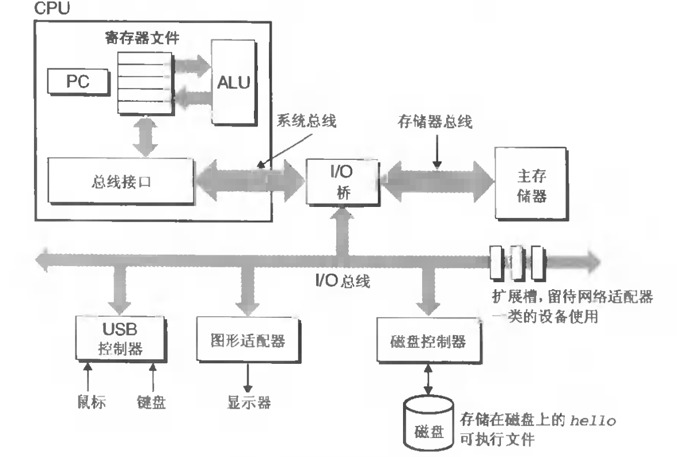
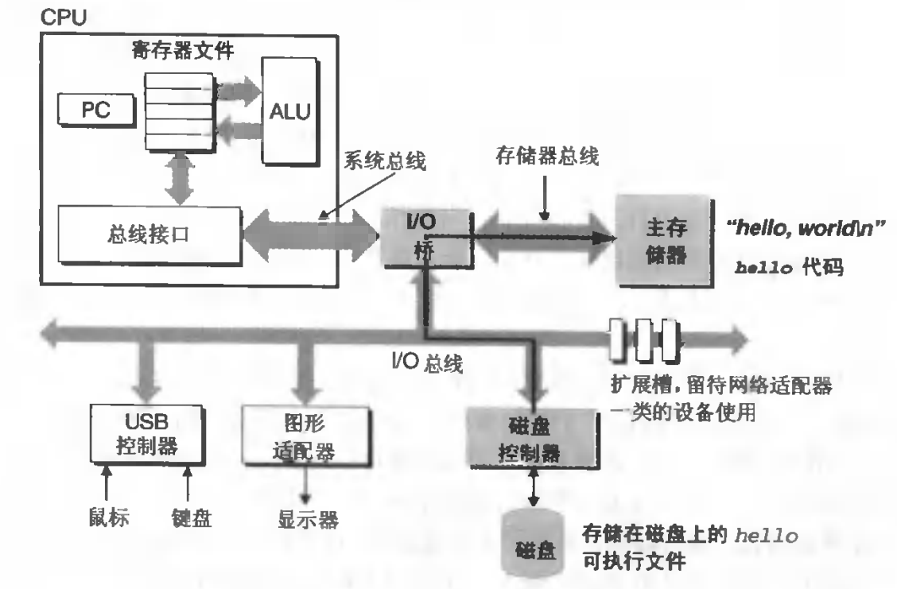
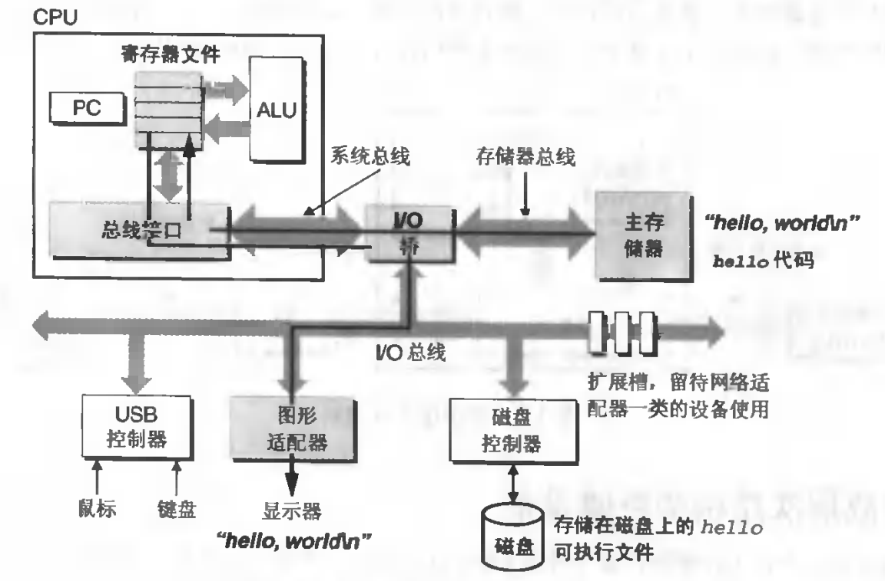
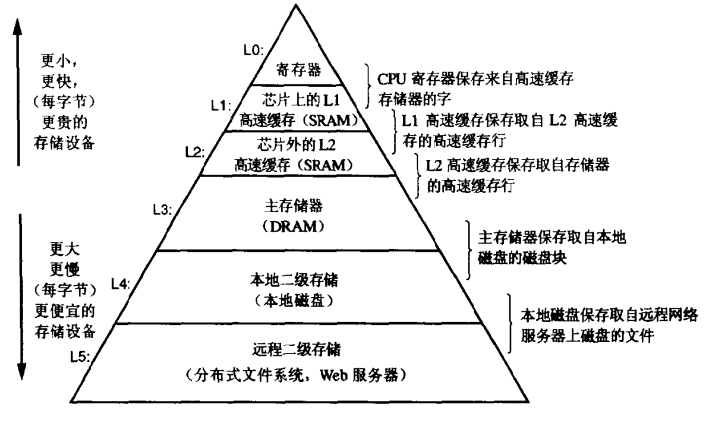
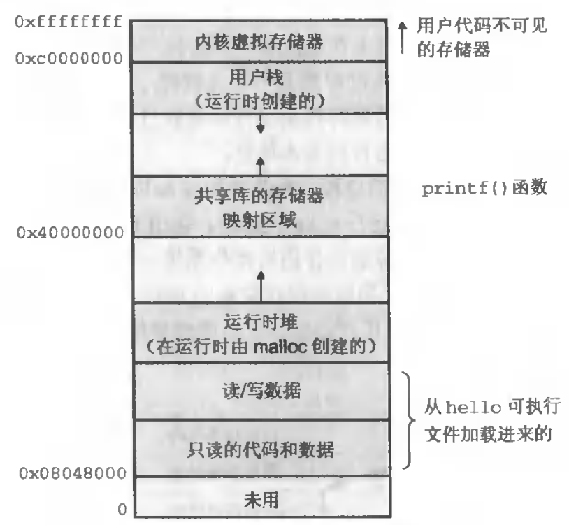
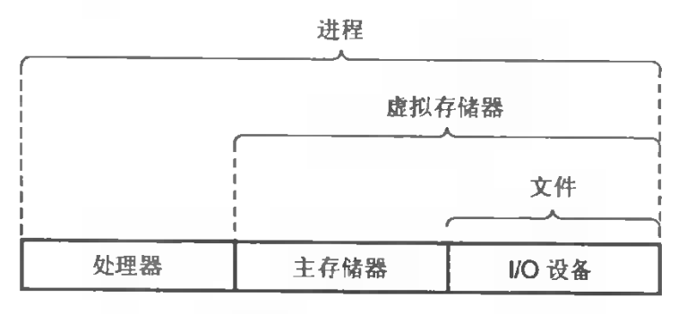

Overview
我们的计算机能够运作起来，是我们将源代码编译成机器能够识别的二进制机器指令后，打包进可执行文件，并存入磁盘中。当我们运行一个程序的时候，首先会将磁盘内的二进制文件加载到内存中，然后通过CPU来解释和运行。为了能够做到，通过统一的方式使用不同型号的硬件，并且防止失控的程序滥用硬件资源，人们则通过操作系统来处理这些事情。此外操作系统还负责不同进程间的上下文切换，以实现多任务执行（分时调度不同的进程）。
信息等于位加上下文
计算机信息的本质就是二进制数据，以8bit为一个单位byte，他可以表示的信息包括：
- 字符（文本，用户数据，源代码）
- 数字（整数，浮点数）
- 机器指令
源码编译过程
这里以一段C代码为例，代码存放于hello.c文件中
#include <iostream>
using namespace std;
#define HELLO_WORLD "hello world"
int main()
{
print(HELLO_WORLD);
}上面是一段简单的代码示例，但是计算机并不能直接运行这段代码，我们需要通过一些列操作，将源代码转成包含机器指令的二进制可执行文件，才能够被计算机识别。编译我们一般需要经过以下几个步骤： 
- 我们的源码文件，首先要经过预处理器，将#include的库内.h的代码拷贝到hello.c文件中，同时进行宏展开，此时生成hello.i文件，此时的文件仍然是文本文件
- 将hello.i文件交给编译器处理，将其翻译成汇编代码，生成hello.s文件，此时的hello.s文件仍然是文本，这里将源码先翻译成汇编代码的好处是，不同的语言能够生成相同的汇编代码，这样不同的语言就能在相同的平台上运行，每种语言不必直接翻译成机器可识别的二进制机器指令，而复用相同的汇编器来做这一步
- 将hello.s文件交给汇编器，通过汇编器将其编译成包含二进制机器指令的hello.o文件
- 因为hello.o可能引用了其他库的函数，因此需要通过链接器，将所引用函数的机器指令，从对应的.o库中拷贝出来，并和hello.o库中的机器码一起拷贝到一个可执行文件中，最终这个可执行文件会被存储到计算机的磁盘中。
计算机组件架构概述
要理解程序如何在计算机中运作起来，首先要对计算机的结构有基本的了解，下面是计算机的硬件结构图

如上图所示，计算机基本构建包括
- CPU（中央处理器）
- PC寄存器：处理器的核心寄存器，用于指向当前程序执行的哪条指令
- 寄存器文件：用于存放参与逻辑运算或者算术运算的，从内存拷贝过来的数据
- 算术/逻辑单元（ALU）：当指令和需要用到的数据，都复制到寄存器中时，会将这些数据拷贝到ALU中进行计算，并将结果返回对应的寄存器中，同时更新PC指向的机器指令（执行下一条指令）
- 总线接口：用于和系统总线衔接的接口，从IO设备或者主存储器中，拷贝的数据，均要通过总线来传输，这些数据到达总线接口后，会继续传送到对应的寄存器中
- 主存储器：临时存储数据的地方，运行代码时，会将代码和数据拷贝到主存储器中，计算机断电时，数据会丢失
- I/O设备（控制器和适配器）：包含磁盘，网卡，USB控制器（键盘、鼠标等），图形适配器（显卡）等。控制器和适配器的区别是，控制器是直接镶嵌在主板上的芯片组，而适配器一般通过一个插槽，和主板连接（比如我们的独立显卡）。
- I/O桥：连接系统总线，IO总线和存储器总线的中间设备，负责各种设备的数据的相互传输，比如IO设备中的数据，可以通过IO桥，将数据从IO总线转发到存储器总线或者系统总线中，通过他们传输给主存或者CPU中。
- 总线：传输数据的通道，这里的数据一般指字节，在32为系统中，总线一次能够传输4byte的二进制数据
- 主板：以上设备大多镶嵌在主板上，主板是各个部件能够相互协同运作的基础。
可执行文件运作流程
这里以hello程序为例，展示整个程序的运作流程
- 当我们运行hello这个可执行文件时，首先从磁盘中，将hello中的机器指令，以及数据，从磁盘拷贝到内存中。拷贝的过程是这样的，首先机器指令和代码数据，先通过IO总线，经过IO桥，再通过系统总线，经由cpu的总线接口传输到寄存器中，然后再把它存放到主存储器中，最终完成代码和数据的加载（现代计算机，能够通过DMA技术，将磁盘代码直接读取到主存储器中）
 - PC寄存器，指向第一个计算机操作指令，CPU在完成指令和数据读取以后，会将指令和数据传输给ALU，ALU会将计算后的结果覆盖其中某个寄存器中的值，最终返回给主存储器或者显存或者其他设备，同时更新PC寄存器，使其指向下一个指令。以hello为例，经过若干次更新后，PC寄存器此时指向print指令，数据为“hello world\n”，CPU在加载完print指令和“hello world\n”数据后，会交给ALU去解释和执行这个指令，此时计算机会将“hello world\n”通过总线传输给显示适配器，最终显示在屏幕上。
 - 完成上述流程后，程序结束，并且将主存中的对应代码和数据清除。
- 我们在运作一个程序的过程中，绝大多数操作时将字节从一个地方，拷贝到另一个地方，为了提高速度，尽量避免从低速的设备里存取字节，基本思想则是，当前设备作为下一级设备的高速缓存，比如主存当做磁盘的高速缓存，我们的硬件设备读写速度梯度图如下所示：

操作系统概述
上面我们展示了计算机程序，从源码到可执行文件的处理过程，以及该可执行文件的执行流程，但是我们希望计算机能够在同一时间内，执行更多的事情，并且更快得执行。按最简单的模型，我们可以让多个程序排队，让计算机一个一个将其完成，这种方式对于类似hello这种类型的程序来说，没有什么问题，因为他们只有一个一次就完成的执行流，但是对于一个无限循环执行的程序，这种方式就不能满足了，因为该程序会始终占用机器资源。然而，要让多个程序“同时执行”，并且相互之间不受影响，还能使每个程序看上去是独占硬件资源，这里就需要一个中间层，介于硬件和应用程序之间的交互，我们称之为操作系统。现代操作系统的职责包括以下几点：
- 防止失控的应用程序滥用硬件资源
- 为应用程序，提供统一的操作硬件的系统级api，使得相同的应用程序，能够在不同的硬件上运作，应用层完全不用关心硬件的细节
- 多任务系统，同时支持多个程序“同时执行”，并且让每个程序看上去都是独占整台机器
第一点保证了，即使一个应用进程出错，也不会使整台机器停止运作从而最大限度避免影响到其他进程；第二点使应用程序编写人员，能够忽视各种硬件的细节，并且让程序拥有更好的可移植性；针对第三点，人们发明了进程的概念。
进程的出现，为多任务实现提供了可能和便利。每个进程拥有自己独立的内存空间，在单核的cpu中，操作系统会给每个进程分配时间片，用于不同的进程执行，每个进程在制定时间片内执行，时间到时，不论是否执行完，都要切换到另一个进程让其执行，这个切换的过程是操作系统来执行的。每个进程在进行切换时，首先会将当前的PC寄存器中的指令，以及寄存器中存放的数据，保存到进程context中，在切换到另一个进程的时候，又会从其context中读取机器指令和寄存器中的数据，并且继续执行该进程。这样，操作系统即实现了多任务，又让每个进程在自己的时钟周期内，独占整个机器资源。
每个进程都有自己的内存空间，为了实现上面所述的几点（看上去是独占机器资源以及能够让操作系统多任务执行），进程的内存空间设计成如下所示的结构：

- 只读的代码和数据：可执行文件中的机器指令，以及数据存放于此
- 运行时的堆：程序内部，new出来的内存，可以动态拓展
- 共享库的存储器映射区域：操作硬件的机器指令（一般由操作系统提供）等
- 用于栈：执行程序时，用到的栈
- 内存虚拟存储器：操作系统要用的部分，应用进程不可访问
总的来说，文件时IO设备的抽象，虚拟存储器是主存和文件的抽象，而进程则是处理器、主存和文件的抽象。进程下还有线程，线程是进程的执行单位，进程是资源单位，一个进程至少包含一条线程：
引证来源1：https://en.wikipedia.org/wiki/Thread_(computing) 【Processes, kernel threads, user threads, and fibers】一节
At the kernel level, a process contains one or more kernel threads, which share the process’s resources, such as memory and file handles – a process is a unit of resources, while a thread is a unit of scheduling and execution.引证来源2：https://zh.wikipedia.org/wiki/%E8%A1%8C%E7%A8%8B
进程（英语：process），是计算机中已运行程序的实体。进程为曾经是分时系统的基本运作单位。在面向进程设计的系统（如早期的UNIX，Linux 2.4及更早的版本）中，进程是程序的基本执行实体；在面向线程设计的系统（如当代多数操作系统、Linux 2.6及更新的版本）中，进程本身不是基本运行单位，而是线程的容器。程序本身只是指令、数据及其组织形式的描述，进程才是程序（那些指令和数据）的真正运行实例。若干进程有可能与同一个程序相关系，且每个进程皆可以同步（循序）或异步（平行）的方式独立运行。现代计算机系统可在同一段时间内以进程的形式将多个程序加载到内存中，并借由时间共享（或称时分复用），以在一个处理器上表现出同时（平行性）运行的感觉。同样的，使用多线程技术（多线程即每一个线程都代表一个进程内的一个独立执行上下文）的操作系统或计算机架构，同样程序的平行线程，可在多CPU主机或网络上真正同时运行（在不同的CPU上）。
进程概念图：
